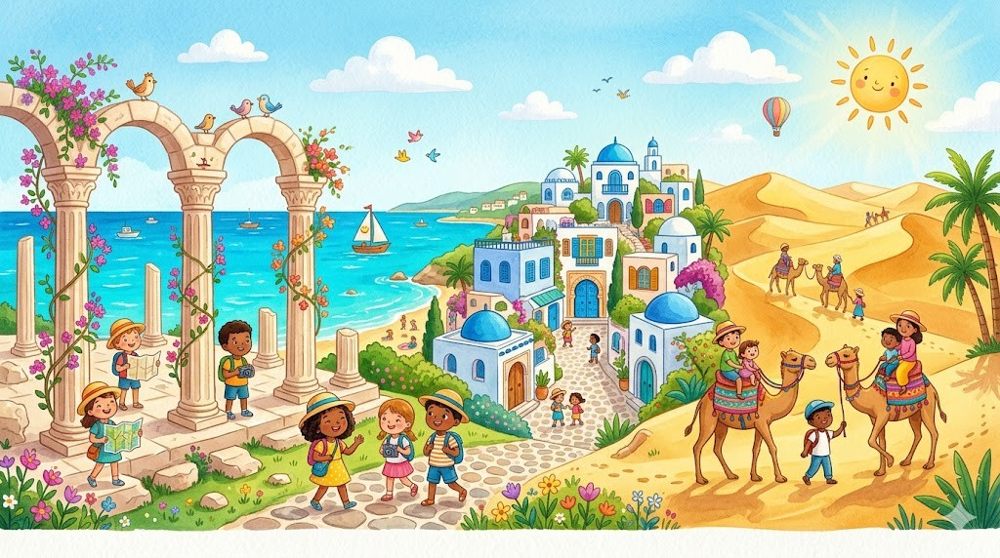
Hier stehen die wichtigsten Daten zu deinem Land. In der App baust du daraus deinen eigenen Steckbrief.
| Hauptstadt | Tunis |
| Kontinent | Afrika |
| Sprache | Arabisch und Französisch |
| Währung | Tunesischer Dinar |
| Einwohner | etwa 12 Millionen Menschen |
| Fläche | rund 164.000 km² (etwa halb so groß wie Deutschland) |
| Großer Berg | Jebel ech Chambi, rund 1.544 m |
| Nachbarländer | Algerien und Libyen, im Norden und Osten das Mittelmeer |
In Tunesien gibt es viele berühmte Orte. Diese vier solltest du kennen.
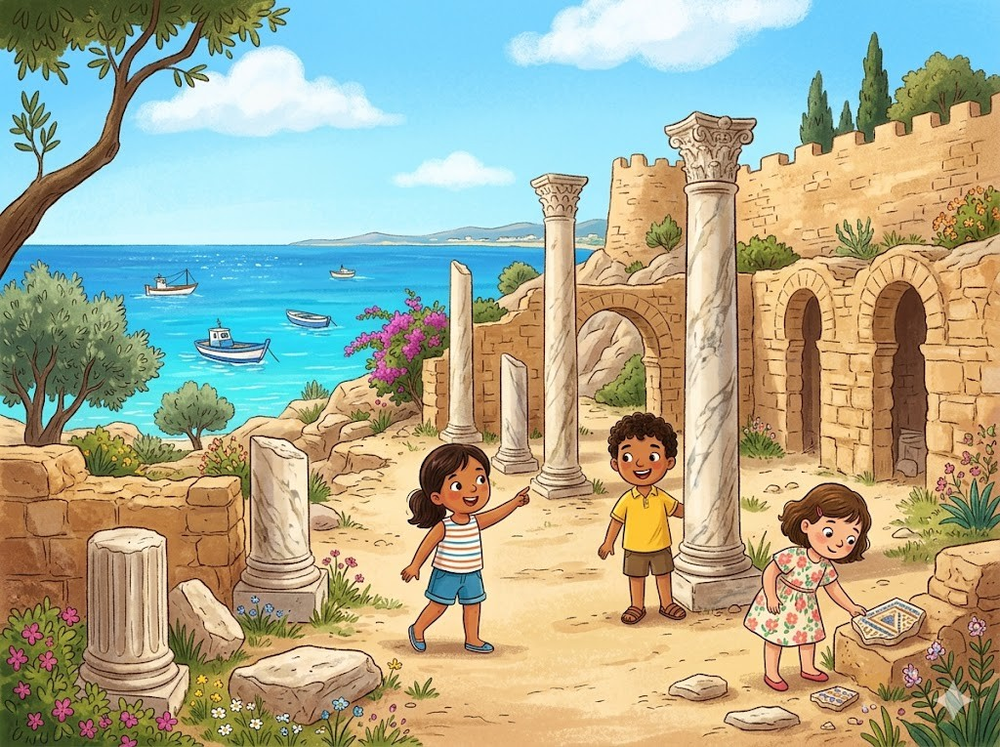
Die Ruinen von KarthagoKarthago war vor langer Zeit eine mächtige Stadt am Meer. Heute sieht man dort nur noch alte Ruinen. Viele Mauern und Säulen sind stehen geblieben. Karthago liegt nahe bei der Hauptstadt Tunis. Es gehört zum Welterbe und ist sehr berühmt.
Grüne Wörter für die AppKarthagomächtige Stadt am MeerRuinenSäulenWelterbe
Das Amphitheater von El DjemIn El Djem steht ein riesiges rundes Bauwerk. Die Römer haben dieses Amphitheater vor fast 2000 Jahren gebaut. Früher saßen hier viele tausend Menschen auf den Stufen. Sie schauten Kämpfe und Spiele an. Heute ist das Amphitheater gut erhalten.
Grüne Wörter für die AppEl DjemAmphitheaterDie Römerviele tausend Menschengut erhalten
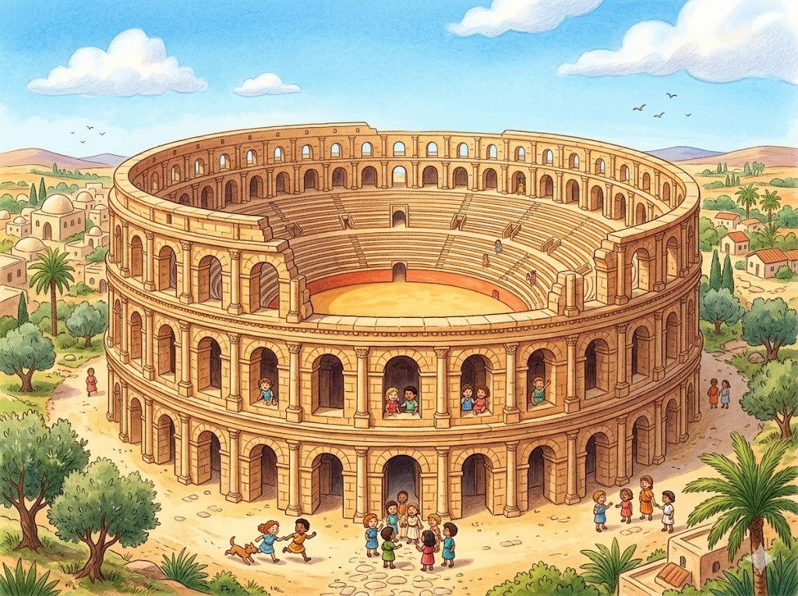
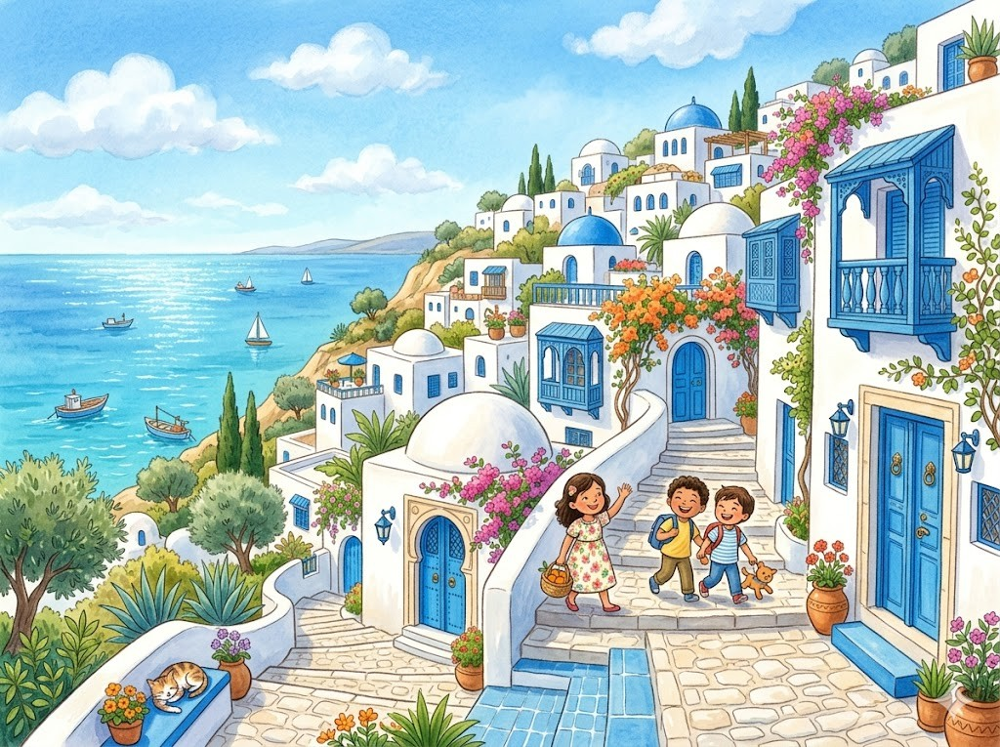
Sidi Bou SaidSidi Bou Said ist ein hübsches Dorf auf einem Hügel. Alle Häuser sind weiß angemalt. Die Türen und Fenster leuchten in Blau. Von oben hat man einen weiten Blick auf das Meer. Viele Künstler kommen gern hierher.
Grüne Wörter für die AppSidi Bou SaidweißBlauBlick auf das MeerKünstler
Die SaharaIm Süden von Tunesien beginnt die Sahara. Das ist die größte Trockenwüste der Welt. Hier gibt es große Sanddünen aus goldgelbem Sand. Tagsüber wird es sehr heiß. Manche Menschen reiten dort auf Kamelen durch den Sand.
Grüne Wörter für die AppSaharagrößte TrockenwüsteSanddünensehr heißKamelen
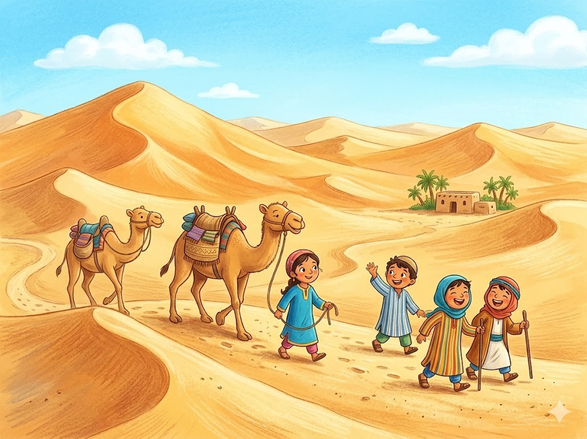
Diese Tiere leben in Tunesien und sind ganz besonders.
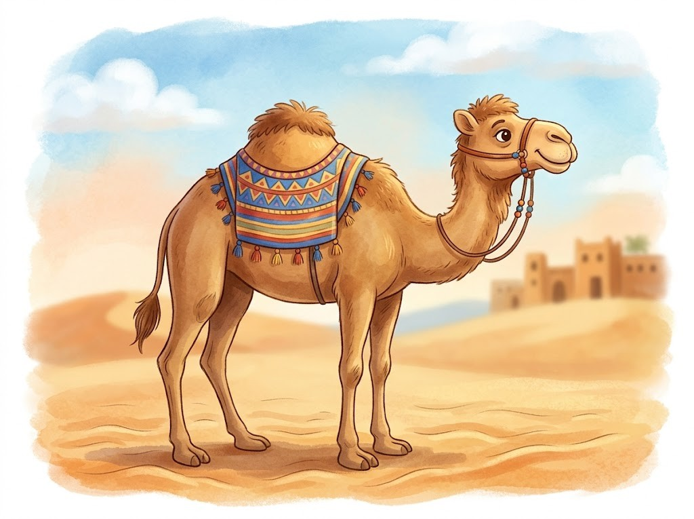
Das DromedarDas Dromedar ist ein Kamel mit nur einem Höcker. Im Höcker speichert es Fett als Vorrat. So kann es lange ohne Wasser auskommen. Seine breiten Füße sinken im Sand nicht ein. In Tunesien tragen Dromedare oft Lasten.
Grüne Wörter für die AppDromedarKameleinem Höckerohne Wasserbreiten Füße
Der FennekDer Fennek ist ein kleiner Wüstenfuchs. Er hat sehr große Ohren. Mit den Ohren hört er Beute und kühlt sich ab. Tagsüber schläft er in seinem Bau im Sand. Erst nachts geht er auf die Jagd.
Grüne Wörter für die AppFennekWüstenfuchsgroße OhrenBau im Sandnachts
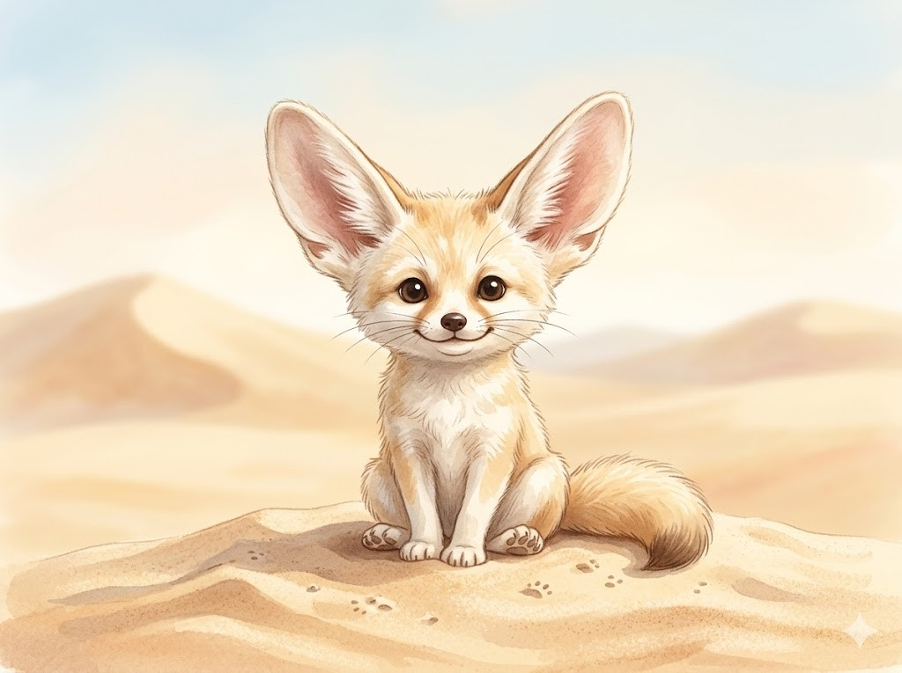
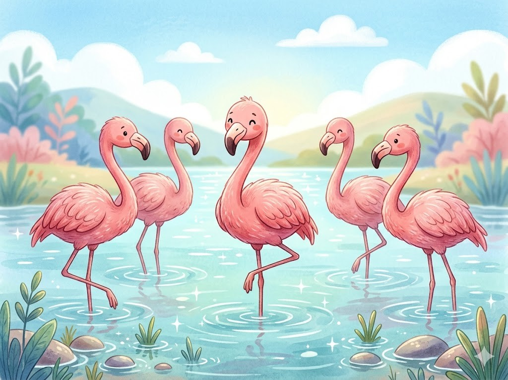
Der FlamingoAn den Seen von Tunesien leben rosa Flamingos. Sie stehen oft in flachem Wasser. Mit dem Schnabel suchen sie nach kleinen Tieren. Von dieser Nahrung werden ihre Federn rosa. Flamingos schlafen manchmal auf einem Bein.
Grüne Wörter für die AppFlamingosrosaflachem WasserSchnabelauf einem Bein
In der App kannst du beim Essen das Foto nehmen oder dein Gericht selbst malen.
CouscousCouscous ist das wichtigste Gericht in Tunesien. Es besteht aus vielen kleinen Kügelchen aus Hartweizen. Dazu gibt es Gemüse und manchmal Fleisch. Die ganze Familie isst oft aus einer großen Schüssel. Couscous schmeckt warm am besten.
Grüne Wörter für die AppCouscouskleinen KügelchenHartweizenGemüsegroßen Schüssel
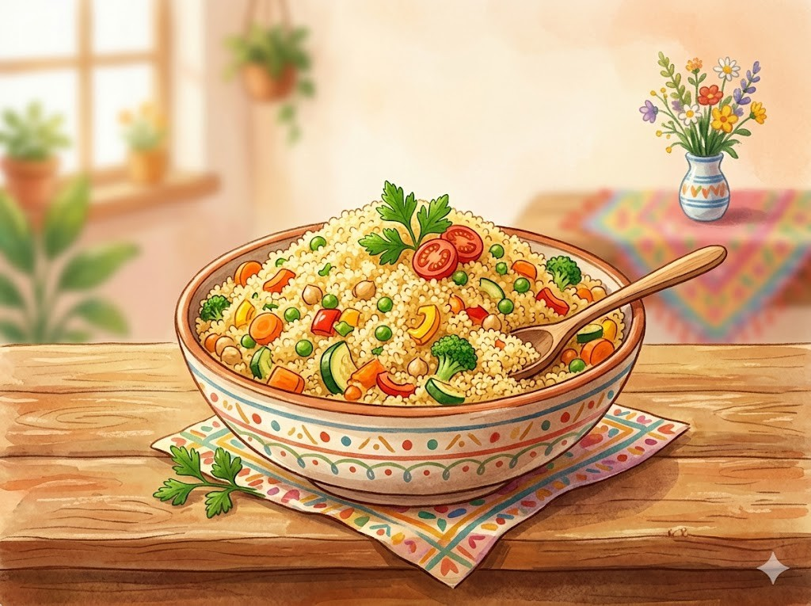
BrikBrik ist eine dünne, knusprige Teigtasche. Innen ist meist ein Ei versteckt. Oft sind auch Thunfisch und Kräuter dabei. Die Teigtasche wird in heißem Fett gebacken. Man muss vorsichtig essen, damit nichts herausläuft.
Grüne Wörter für die AppBrikknusprige Teigtascheein EiThunfischheißem Fett
HarissaHarissa ist eine scharfe rote Paste. Sie wird aus Chili und Gewürzen gemacht. Viele Tunesier essen sie zu fast jedem Gericht. Schon eine kleine Menge ist sehr scharf. Dazu isst man frisches Brot.
Grüne Wörter für die AppHarissascharfe rote PasteChilisehr scharfBrot
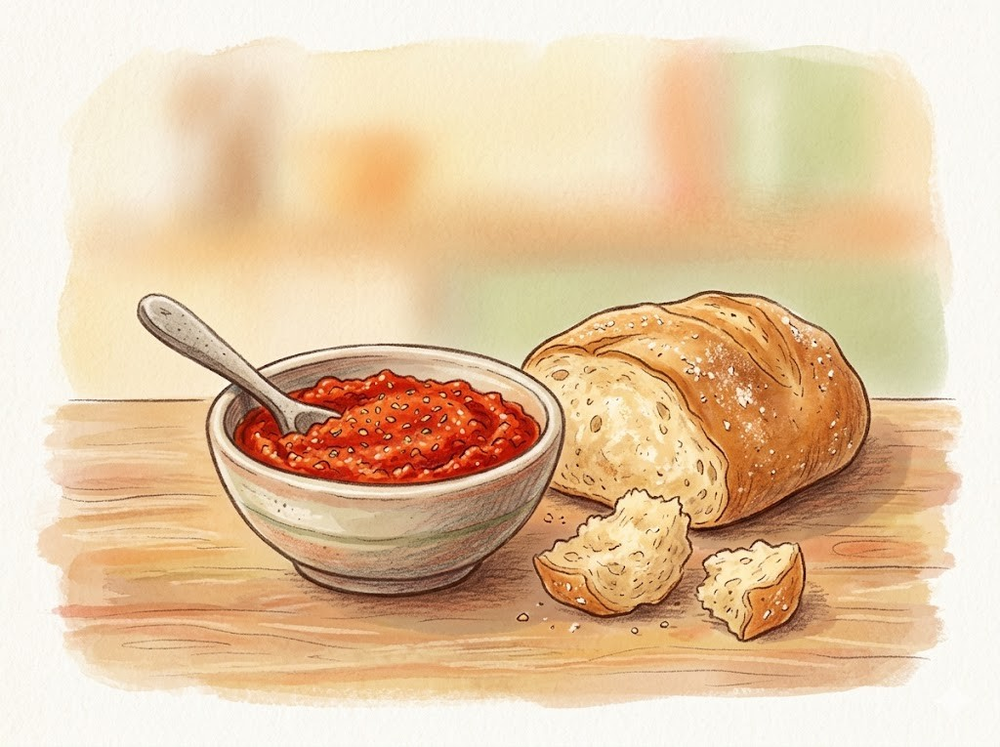
Die Nationalmannschaft von Tunesien heißt die Adler von Karthago. Tunesien hat sich für die WM 2026 qualifiziert. Ein bekannter Spieler ist Hannibal Mejbri. Er spielt in England bei Burnley. Mejbri kämpft auf dem Platz und gibt nie auf.
Grüne Wörter für die Appdie Adler von KarthagoWM 2026Hannibal MejbriBurnleykämpft
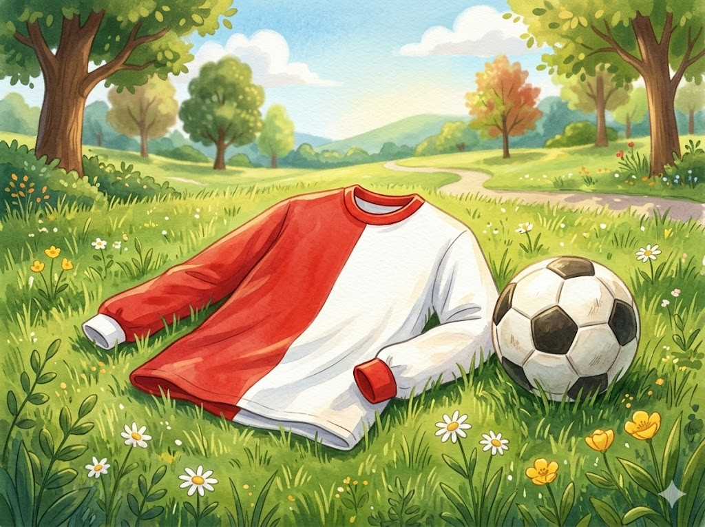
In der SchuleDie meisten Kinder in Tunesien gehen gern zur Schule. Sie lernen zuerst Arabisch lesen und schreiben. Später kommt auch Französisch dazu. Nach der Schule helfen sie oft zu Hause. Am Nachmittag spielen sie mit Freunden draußen.
Grüne Wörter für die AppSchuleArabischFranzösischhelfen sie oft zu Hausespielen
Spiel und FreizeitFußball ist bei den Kindern sehr beliebt. Auf staubigen Plätzen spielen sie zusammen. Im Sommer fahren viele Familien ans Meer. Tunesien hat schöne Strände am Mittelmeer. Dort baden die Kinder im warmen Wasser.
Grüne Wörter für die AppFußballspielen sie zusammenans MeerSträndeMittelmeer
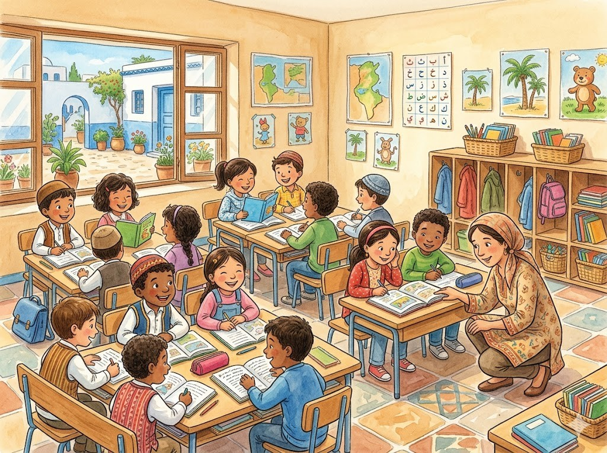